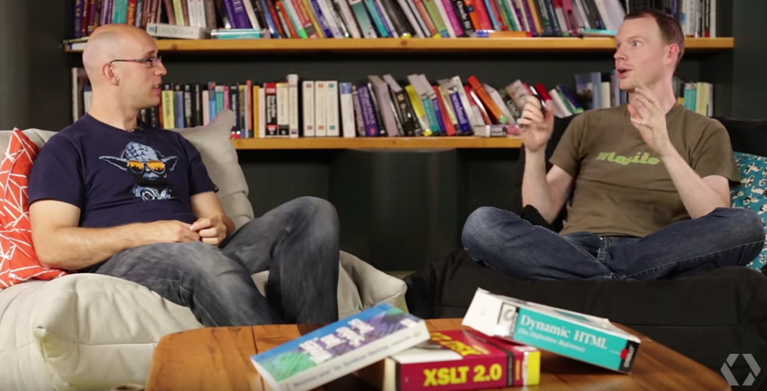

Hello World
CodeTengu Weekly 碼天狗週刊
CodeTengu Weekly 會在 GMT+8 時區的每個禮拜一早上 10:00 出刊，每一期會從目前的 curator 名單中選出三位來負責當期的內容，每一位 curator 各自負責不同的領域，如果你在這一期沒有看到自已感興趣的東西，說不定下一期就會有了。
你也可以瀏覽一下前幾期的內容，有價值的東西是不會過時的。
本期 curators：
- @saiday - Imnotyourson - 捷運飲食推廣委員
- @tzangms - Oceanic / 人生海海 - 希望大家不要跑去宜蘭玩了啦
- @adamp33 - 看棒球才是正職，副業是前端工程師
大家也可以 follow 一下 CodeTengu 的 Facebook 和 Twitter，有很多 Weekly 看不到的內容。有任何建議或疑問也可以來 Gitter 聊一聊，歡迎亂入 👺
 @saiday
@saiday
Introducing the Big Nerd Ranch Core Data Stack
iOS 開發者們在做數據儲存是用 Core Data、fmdb 還是 realm？如果你還沒決定也許 Evaluating iOS data storage options: Core Data, FMDB and Realm 能給你一點點輪廓。
不過這篇就是講 Core Data 就是了。 Big Nerd Ranch 講解了三個常見的 Core Data stack pattern (列在下面)，有圖表跟優缺點介紹，以及分享他們自己基於第二跟第三種 pattern 組合起來的 best practice。開源了 bignerdranch/CoreDataStack。
- Shared Persistent Store Coordinator Pattern
- Nested Managed Object Context Pattern
- Shared Store Stack Pattern
A Better Way to Automatically Merge Changes in Your Xcode Project Files
在 iOS 多人開發的環境下，大家應該對 git 上出現 project.pbxproj conflict 不陌生，常常有人新增一些檔案就要手動解決 conflicts 了，很浪費時間啊。
mergepbx 這套開源項目是了解 .pbxproj 應該長什麼樣的 script，可以幫助我們自動 merge 煩人的 .pbxproj conflicts。
另外如果你嫌麻煩的話，可以試試對 .pbxproj 採用 git 的 merge policy union， union 是不會產生 conflict 而直接保存兩個 commit 的變更。也就是說就可能會有一個情況是你的 .pbxproj 會變成 Xcode 打不開的格式。
Speed up your app (Droidcon NYC 2015)
在 CodeTengu Issue 6 有推過 Udi Cohen 在 Droidcon NYC 的投影片，因為我覺得投影片的內容就很豐富了，並且說等它的錄影片段出來會推到粉絲團。沒想到影片出來是出來了竟然還搭著文章一起，因為內容又太豐富而且有些是投影片中沒有的，我決定再推一次。
在文章中他很詳細的解釋怎麼用這些 profiling tools 跟提示訊息對應的意思，非常有教育意義！
A private Maven repository for Android in 30 min · Jeroen Mols
大家都在使用 Gradle 來做 Android 的依賴管理了，往往在公司內部可能會流傳著一些神祕 Utils 還是什麼號稱萬用的套件庫，平常 import 來 import 去的又可能有一些改動，實在很麻煩啊。
如果有一個私人的 maven repository 就什麼都搞定了！
這篇文章選擇使用 Artifactory 這個 open source maven repository manager 來管理我們的私人 maven artifacts，他說只要 30 分鐘就能完成了，看起來也真的蠻簡單方便的。
Functional Reactive Programming in an Imperative World, with Nacho Soto
又是一個關於 Functional reactive programming 的 talk，推薦的原因是這個 talk 不是那麼的學院派地介紹及講著我們其實很少會用到的實作方式以展現 functional reactive programming 的威力。
這個 talk 以 client 對 sever 發 request 當例子，先以 imperative programming (一般代碼) 寫一次，然後用 functional reactive programming 的方式再寫一次。
在結尾的這句話我覺得說得挺好
In a modern codebase of hundreds or thousands of files, the job of the engineer stands beyond contributing to the massive code. It should be our duty to make the code as manageable and scalable as possible. We can do so by reducing complexity, and FRP one great way to do so.
這個 Talk 的作者是 elevate app 的 tech lead，其實我也是 elevate 的腦粉。
註：這個 Talk 是以 ReactiveCocoa 及 Swift 示範
@tzangms
Meetings
這幾年讀了許多的書, 主要都還是職場、工作有關的書，許多書都會提到開會這件事, 這篇文章就在說如何開一場好會。
也分享一下, 這是我看書以及這幾年工作的心得:
- 準時開會
- 開會前後的十幾分鐘大家都會沒辦法專心工作, 因為待會要開會了, 會停下手邊的事。 開會是有花費的, 而且不僅只是開會那段時間而已。
- 開會前先通知與會人員開會要討論的事情, 與會人員可以預先思考, 或是方便收集資料作出正確的判斷, 而且 ... 開會也可以比較快結束。
- 會議要有主要負責人, 例如修正開會中討論的方向偏差, 以及確認開會時間準時結束。
- 要有人做會議記錄, 記錄討論決策、後續執行事項負責人、完成時間。
- 會議結束前, 跟所有人確認開會決定的事項, 個別負責的事情。
- 最後, 會議記錄很重要, 不要叫菜鳥做。
先前看過一本書叫「華頓商學院最受歡迎的談判課」裡面就有強調會議記錄的重要性, 大家有興趣可以看看。
The Hidden Costs That Engineers Ignore
這是一篇非常棒的文章, 跟我這陣子形成的觀點幾乎一樣。
雖然一開頭用「It’ll only take me a few hours to implement the feature」這句老話開頭, 不過這篇主要不只講程式碼, 而是包含了程式碼、系統、專案, 以及組織, 這四個東西裡面所隱含的複雜性問題。
像是程式碼寫的太複雜、用了太新的技術, 導致其他 team member 沒辦法很快接手, 或者是產品太複雜、功能太多等。
文章後半也有提到如何對付這些複雜性問題, 其中一點我覺得很有趣, 作者說他在 Quora 舉辦了一次「Code Purge Day 」並且有排行榜, 讓這件事更有趣。
我想這篇我會在部落格另外寫一篇, 因為我差點就在這裡寫得太長了。
如何才能成为一个好的技术领导者？
這篇文章主要是下面這幾個重點, 我覺得很不錯, 身為一個技術領導者, 以下幾點都得做到。
- 如果不能從幫助團隊獲得滿足感，那麼就不要成為一名領導者
- 將自己視為其他開發人員的導師
- 隨時準備好回答團隊成員的問題
- 減少具體的編碼工作，但仍然要編碼
- 要謙遜
- 要誠實
當主管前兩年, 我沒做到前面 1, 2 點, 第 3 點我做得很好, 第 4 點我 code 寫得太多, 第 5 ,6 點我有做到。
現在呢, 第 1 點我努力中, 第 2 點對於新人我有做到, 第 3 點因為太忙, 做的沒有非常好, 第 4, 5, 6 點我則是自認做得不錯 :)
誠實才是上策
@adamp33
Pseudo-comments in CSS
background: red;
'background: yellow;
background: green; // this is white
background: blue !important;
你知道以上的 CSS 會出現哪個背景顏色嗎？這篇文章以另類的角度來看 CSS 如何被瀏覽器解讀，也許可以幫助你省去很多抓臭蟲的時間。（如果你常常有 typo 的話）

HTTP 203 脫口秀
由 Google Chrome 傳教士 Paul Lewis 和 Jake Archibald 所策劃，最近已經來到了第三季，影片大都是 10 分鐘以內，都是講前端議題，沒有程式碼，很適合通勤時收看。
若是想要練習英文聽力，對於前端工程師是很好的聽力教材。
也推薦其他 Google Developers 在 Youtube 上其他前端相關的節目：
smartcrop.js 用 JavaScript 偵測照片主要物體
用 JavaScript 和 canvas 做出裁切工具，可以透過判斷膚色、高反差區域找出圖片中主要物體，將物體放在裁切範圍內。出乎意料效能很好，滿神奇的！
工商服務
Safari Digital Library
Safari 是 O'Reilly Media 100% 投資的子公司，Safari Digital Library 資料庫整合 200 家以上全球知名資訊教育出版社內容（包含：O'Reilly Media, Pearson, Microsoft Press, IBM Press, Cisco Press, Addison Wesley, John Wiley & Sons 等），提供 32,000+ 本與資訊、管理相關的電子書、3,200+ 支教學影片、1,100 小時 O'Reilly 研討會影片、搶先上市手稿（Early Releases）、證照準備教材、有聲書等豐富資源。資料庫內容支援全文檢索，使用者可以快速的查詢到所需章節或影片段落，同時也可以建立閱讀清單、並下載到手持裝置上進行離線閱讀。
Random Cool Stuff
Software Licenses Explained in Plain English
到底誰有真的看過引用的第三方庫或服務的 licenses 呢？沒有吧！
有，他有，他把 OS X El Capitan License 看完了
每次按下 Agree 的時候都覺得不踏實，不知道會不會同意了之後就簽下了什麼賣身契或是黨證申請書，好緊張喔。這個服務可以讓你查你用的 license 到底是什麼，如果有 open source project 的話，也許幫得上忙。比方說 IDGAF v1.0。
由 @saiday 提供。